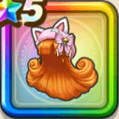

アリーナねこみみベレー
攻略班 10点 / 物質系への耐性+5%スライム系への耐性+5%物質系への耐性+5%悪魔系への耐性+5%スキルの体技ダメージ+7%スキルの会心ダメージ+4%物質系へのダメージ+4%【晴れ】物質系へのダメージ+2%会心率+3%
くわしい特徴
【レベル別習得スキル】 Lv1物質系への耐性+5% Lv5スライム系への耐性+5% Lv8スキルの体技ダメージ+7% Lv8会心率+3% Lv10スキルの会心ダメージ+4% Lv12物質系へのダメージ+4% Lv15【晴れ】物質系へのダメージ+2% Lv18物質系への耐性+5% Lv20すばやさ+6 Lv23悪魔系への耐性+5% Lv25さいだいMP+5 【限界突破スキル】 1凸攻撃力+12 2凸すばやさ+12 3凸守備力+12 4凸さいだいHP+12